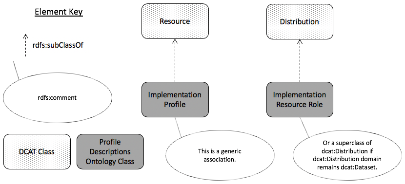
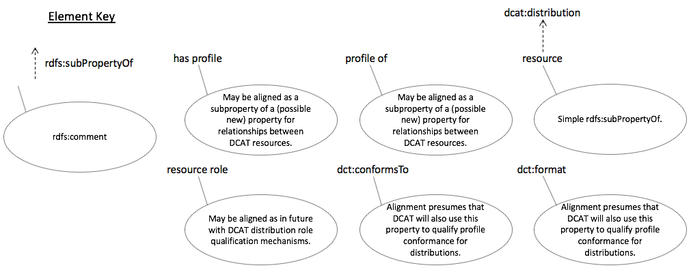

This title better supports the purpose of the ontology - to relate parts of and multiple profiles, not to describe
them
Abstract
This ontology is for describing relationships between standards/specifications, profiles of them and supporting
artifacts, such as validating resources.
The namespace for PROF terms is https://w3c.github.io/dxwg/profiledesc/.
The PROF ontology in OWL, encoded in RDF Turtle, is available at profiledesc.ttl.
Family of Documents
This document is part of the output of the Dataset Exchange Working Group (DXWG). All documents from the group
are listed here.
DCAT documents
The DCAT documents are about the revised Data Catalog Vocabulary.
[[vocab-dcat]] (Recommendation), description of the DCAT RDF vocabulary
Profiling documents
These documents give guidance on profiling. Some of the documents are general while some are technology-specific.
Please consult the Profile Guidance [[PROF-GUIDE]] document for an overview of all profiling documents. It is the
recommended starting point.
[[PROF-GUIDE]] (Recommendation), the top-level general profiling guidance document giving an overview of all other documents
[PROF-DESC] (WG Note), this document, a formal ontology describing objects related to profiles
[[PROF-CONNEG]] (Recommendation), Specific guidance on how to negotiate for Internet resource content using profiles
[[PROF-IETF]] (IETFInternet-Draft), HTTP Headers for HTTP content negotiation by profile
Introduction
This model starts with dcterms:Standard entities
which can either be Base Specifications (a standard not profiling any other Standard) or Profiles (Standards which
do profile others). Base Specifications or Profiles can have Implementation Resource Descriptors associated with
them that defines implementing rules for the it. Implementation Resource Descriptors must indicate the role they
play (to guide, to validate etc.) and the formalism they adhere to (dct:format) to allow for content negotiation.
A vocabulary of Implementation Resource Roles are provided alongside this ontology but that list is extensible.
The key words may, must, must no, optional, shall,
shall not, should, should not, recommended, required,
in this document are to be interpreted as described in [[[rfc2119]].
Namespaces
This section is non-normative.
The following namespace prefixes are used throughout this document:
Table 1: Prefix and Namespaces used in this specification
prefix
namespace IRI
definition
rdf
http://www.w3.org/1999/02/22-rdf-syntax-ns#
The RDF namespace [[rdf-concepts]]
xsd
http://www.w3.org/2000/10/XMLSchema#
XML Schema Namespace [[xmlschema11-2]]
owl
http://www.w3.org/2002/07/owl#
The OWL namespace [[OWL2-OVERVIEW]]
prov
http://www.w3.org/ns/prov#
The PROV namespace [[PROV-DM]]
prof
http://www.w3.org/ns/prof#
The PROF namespace, used for this ontology
(others)
(various)
All other namespace prefixes are used in examples only.
In particular, IRIs starting with "http://example.com" represent some application-dependent IRI [[RFC3987]]
Check the assertion in the table above of the PROF namespace
Add a derivative namespace of PROF for the test suite constraints resource
A basis for comparison; a reference point against which other things can be evaluated.
Source: [[DCTERMS]].
profile
A named set of constraints on one or more identified base specifications,
including the identification of any implementing subclasses of datatypes,
semantic interpretations, vocabularies, options and parameters of those base specifications
necessary to accomplish a particular function.
This definition includes what are often called "application profiles", "metadata application
profiles", or "metadata profiles".
Until this ontology, there was no formal W3C method for describing the objects (Internet resources) related to
profiles.
There are a multitude of ways to describe the components within or defining a profile,
such as documents (PDF documents [[PDF]]; any human-readable resources) to offer guidance, constraint languages
from the abstract (Dublin Core's Description Set Profiles [[DCDSP]]) to the concrete (SHACL [[shacl]] & ShEx
[[shex]])) to offer mechanisms for validation of profile instances.
Describing only the components within a profile via documents or constraint languages does not indicate many things
either important or interesting to know about a profile such as:
its dependence on standards or other profiles
inheritance of profile information from the things being profiled
, or
related profile resources
guidance documents in addition to formal constraints
equivalent constraints written in different constraint languages for different forms of resource, e.g.
SHACL for RDF and Schematron [[SCHEMATRON]] for XML.
With a mechanism to relate profiles to standards and other profiles, profile hierarchies can be established which
will:
assist with the reuse of existing profiles
one can profile another profile, rather than profiling a base standard and thus inherit that profile's work
this will assist with alignment of multiple specialised resources, and also with reducing the total effort
and information necessary to specify a profile
eventually allow for machine interpretation of profiles and automated profile negotiation with fallback options
if a client requests a profile which a server cannot deliver, a server may be able to instead deliver a
more generic version of the requested resource, using a profile link to the thing it profiles
a client may be able to generate a request that already indicates acceptable fallback options for resources
when the primary requested profile is unavailable
The details of profile negotiation using this ontology, as suggested immediately above, and also other methods,
are explained in detail in the related [[PROF-CONNEG]] document.
Related Work
This section is non-normative.
PROV deals with derivation and a large part of PROF is derivation and relation
Refer to OGC Modular Specification policy [[modspec]] and related work in ISO TC/211 [[cfg-mgmt]].
These specifications define how dependencies between 'standards' can be handled in a manageable way.
Requirements
This section is non-normative.
This section lists, and then addresses, individual requirements that the Dataset Exchange Working Group
considered important to address profile description.
Profiles may inherit clauses (modules, if designed for this type of reuse) from one or more parent profiles to optimize re-use of existing specifications (6.1)
212
There needs to be a property in the profile where the rules for the descriptive content can be provided. This would apply to the entire profile. [ID42] (5.42)
255
A profile should have human-readable documentation that expresses for humans the main components of a profile, which can also be available as machine-readable resources (ontology or schema files, SHACL files, etc). This includes listing of elements in the profile, instructions and recommendations on how to use them, constraints that determine what data is valid according to the profile, etc.
272
There should be a way for a client to look up additional information about a profile. (What kinds of information? Can we clarify this?) [ID2] (5.2)
286
A profile can be modular, with a given response made up of more than one module. A server can indicate that a response conforms to multiple, modular profiles. [ID3] (5.3)
287
Profiles offered by a service must be discoverable through a machine-readable graph of metadata that describes what is offered and how to invoke the offered profiles. [ID5] (5.5)
288
OWL [[owl2-overview]] overview diagram of this ontology
Is a non-OWL, UML/class diagram needed here?
This model starts with dcterms:Standard entities which can either be Base Specifications
(a Standard not profiling any other Standard) or Profiles
(Standards which do profile others). Base Specifications or Profiles can have
Implementation Resource Descriptors associated with them that defines implementing rules for the it.
Implementation Resource Descriptors must indicate the role they play (to guide, to validate etc.)
and the formalism they adhere to (dct:format) to allow for content negotiation. A vocabulary of
Implementation Resource Roles are provided alongside this ontology but that list is extensible.
Alignments
This section is non-normative.
This section will list alignments from PROF to other W3C ontologies.
Alignment with DCAT
This ontology aligns with the Dataset Catalogue vocabulary as per the class and property diagrams below.

Alignment of PROF classes with DCAT 1.1 [[dcat]] classes. PROF classes are indicated with their rdfs:label text and no namespace prefix.

Alignment of PROF classes with DCAT 1.1 [[dcat]] properties. PROF properties are indicated with their rdfs:label text and no namespace prefix.
Alignment with ADMS
Alignment with OGC/ISO Modular specification model
This section describes the software test suite used to assess adherence of implementations of this ontology to it.
This test suite is implemented as a constraints language validating ruleset coded using the Shapes Constraint
Language (SHACL) [[shacl]] used for validating RDF graphs against a set of conditions. A normative SHACL "shapes
graphs" file, in RDF, is presented here.
The shapes graph file can be used with a validation execution tool such as pySHACL
to test the adherence of instances of this ontology for conformance to it.
Known implementations of this ontology are listed in the next section with their conformance results generated from
using this shapes graph file.
Implementations
This section is non-normative.
This section describes exemplar implementations of the guidance outlined in this document.